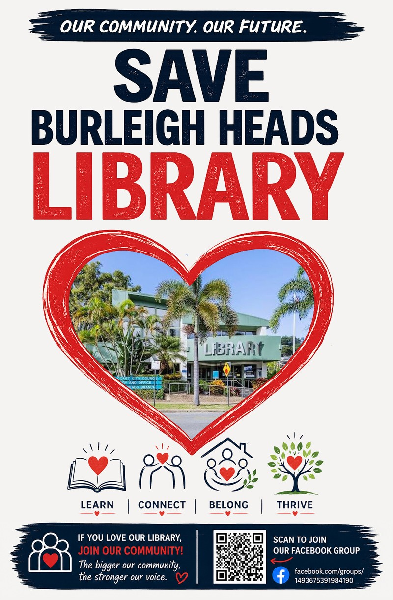

Get involved
A delay isn't a win. Here's how to help make it permanent.
Council has bought itself time, not changed its mind. The campaign needs sustained, visible pressure between now and the Burleigh Waters refurbishment finishing — not a one-off burst of attention. One request from organisers: keep every message, email and call polite. It's working, and it's who we are.
Join the Facebook group
The fastest way to stay in the loop — rally dates, council updates, and where help is needed next all land here first. Save Burleigh Heads Library on Facebook.
Visit the library and borrow books
The simplest, most direct thing you can do. Go in, borrow something, take a friend. If you stop at a local shop or café before or after, mention you're on the way to (or just been to) the library — it helps make the economic case for keeping it open, not just the emotional one.
Email your councillor — especially these three
Council has heard from residents already, including some councillors who originally voted for the closure. Keep the pressure on and keep it polite. Three worth prioritising right now:
Cr Gail O'Neill — Division 14
Cr Shelley Curtis — Division 4
Cr Peter Young — Division 5
Crs O'Neill and Curtis have both indicated they may be open to changing their vote; Cr Young is a priority the campaign has flagged too. The petition being formally tabled gives every councillor a natural moment to revisit their vote — it's worth saying so directly. Share a personal reason the library matters to you or your family — it carries more weight than a form message. If you want to go further, ask why the 2023 Burleigh Heads Business Centre Master Plan wasn't factored into the decision, why the library was refurbished as recently as Jan/Feb 2024 if council intended to close it barely two years later, and why the community wasn't consulted first. A follow-up phone call helps if you have time. You don't need to be in their division to have a view — their vote affects Burleigh Heads either way.
Contact your state MP
Burleigh MP Hermann Vorster has already backed the campaign. Local state and federal representatives can apply pressure council can't easily ignore — a short email or call letting them know this matters to you helps keep it on their agenda.
Show up when it counts
Rallies, council meetings and public submissions all depend on visible numbers. Keep an eye on the news page and campaign Facebook group for the next date, and bring someone with you.
Keep talking to people
Not everyone who uses the library follows council decisions closely. Tell neighbours, mention it at school pickup, put a flyer up at your workplace or club — awareness is what got 3,000 signatures in ten days the first time, and what will keep councillors hearing about this.
Tell us what you know
If you have information relevant to the closure decision — usage figures, correspondence, or anything else — get in touch. Corrections to anything on this site are also welcome.
Print and display our poster
Put it in a shop window, a car window, a noticeboard, wherever people will see it. The QR code scans straight through to the Facebook group.

Questions about the campaign?
Get in touch and we'll point you in the right direction.